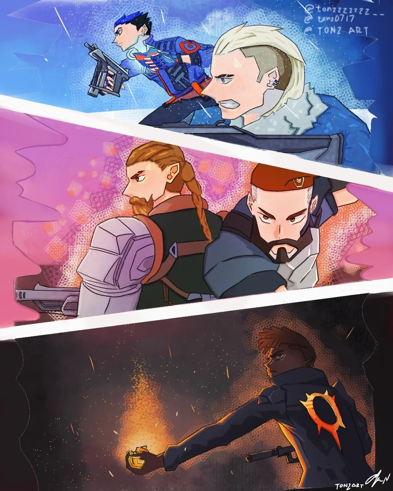
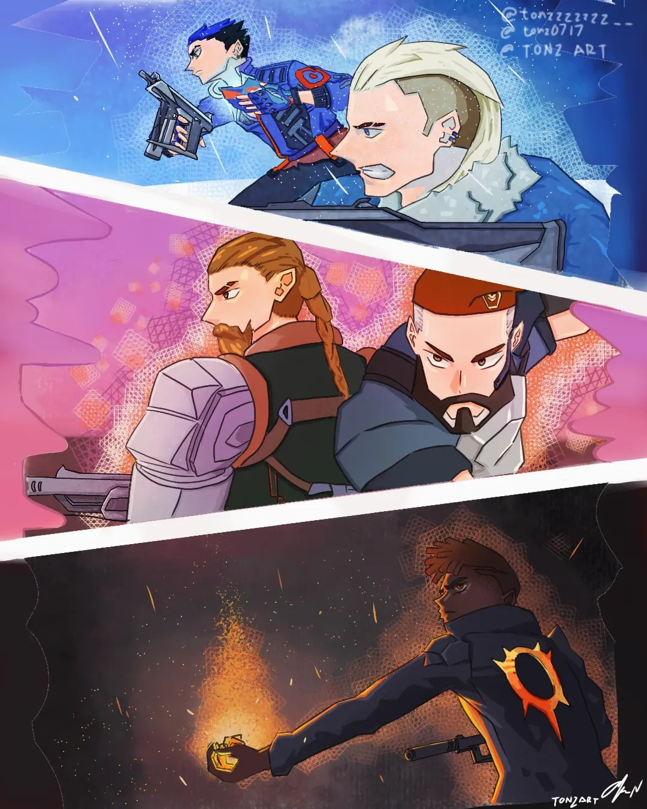

About Me
As a dedicated third-year student majoring in Animation, I am passionate about bringing stories to life through both 2D and 3D animation.
My journey in animation has equipped me with diverse skills, enabling me to tackle various creative projects that challenge and inspire me.
Work Experience
Provided excellent customer service in a fast-paced environment. Developed strong time management and communication skills while balancing work and study.
Freelance Animator and Designer
Service Crew at a Local Resto
Objective
Enthusiastic animation student seeking opportunities to leverage 3D design and storytelling skills in freelance projects and potential internships, with a long-term goal of creating original manhwa or manga.
 
